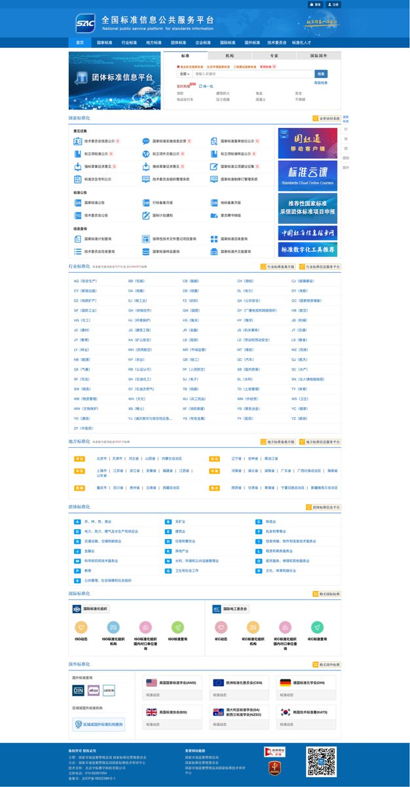
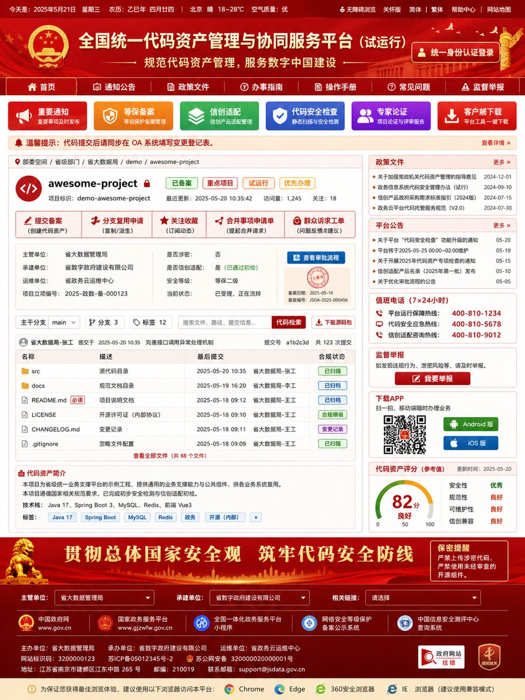

小虚空🍥
@tokerumaisurii
说到相似的东西到底可能会长什么样，其实有迹可循：
图中网站为「全国标准信息公共服务平台 - 国家市场监督管理总局/国家标准化管理委员会」。再就是国家药品监督管理局的数据查询功能页面也差不多是这样（它的主页面就更接近放大头照歌功颂德的俗气政府形象）。


songkeys 🐿️🦋@song.work
@songkeys
如果是中国政府开发 GitHub 的话 https://t.co/PXxUkUpIxh https://t.co/INRg3Pr3Ti